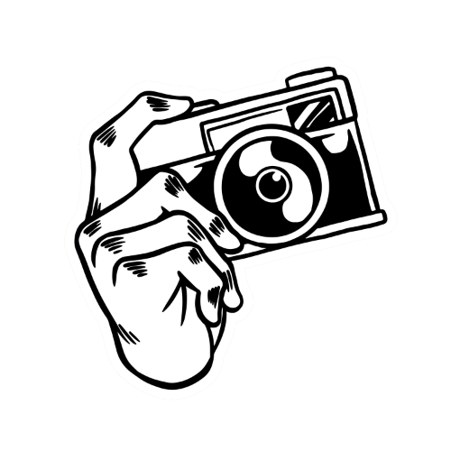

Experience

I've worked at:
I've studied at:
- BNY Mellon
- Wallace Community College
- McDaniel & Associates
- Uni of Pitt at Greensburg
- Point Park University


I work in tax accounting. I'm also a photographer, graphic designer, and video editor. In my free time, I like to play games and learn to code.
I created a web page that listed my favorite movies. This was one of my earliest projects but it inspired me to develop my own entertainment blog site!
Although my background is in accounting and business, my real passion is for the arts. I love music, paintings, movies, and stories. In fact, my first degree was in English Literature because I loved stories so much. I'm trying to find time to write my own stories. I also want to write my own reviews and essays about media and entertainment. I'm learning web development to accomplish this goal. I would like to make my own website that talks about and reviews all sorts of media.
I also love photography. I liked to take pictures on my phone but I was never satisfied with the fidelity and quality of mobile devices. I bought my first camera while working my first job and I fell in love with photography soon after.
I love video games, too! In fact, I aspire to become a game developer some day. Just making something small, even if it's a small platforming game like the original Mario, would make me happy. Plus, I'd be able to put my interests in art, music, and programming together into one single project, which seems pretty cool to me!
© Anton Shchelchkov 2025.